设计工具的克制与效率重构
PlusPlastic 自 2005 年起担任 Rhino 官方授权代理店与培训中心，长期为设计院校、工业界及建筑工作室提供软体供应、技术支持与培训课程。团队本身亦承接产品与建筑领域的实际设计课题——设计师既是重度建模者，又是技术讲师。为了高效应对大量实际项目中的高频痛点，团队在内部积累了丰富的脚本工具与自制命令。byRhino Gadget 即为这些高频生产力工具的公开编译集。
设计社群习惯将具备权威性与完整体系的工具书称为「橙皮书」。本书基于官方帮助文档的全部 93 个专题页面、472 幅高清操作图解与完整技术参数重新编译制作，全面覆盖 11 大功能领域与全部 116 条命令。每条命令均按「功能定义 → 操作步骤 → 参数选项 → 核心要点 → 图解范例」的标准化版式呈现，并在第十五章系统提炼出六大典型工程工作流。
本书旨在成为每一位 Rhino 高阶设计师案头的权威参考书。
目录大纲与检索导航
第一章 · 插件概述
1.1 插件背景
byRhino Gadget(바이라이노 가젯) 是韩国 PlusPlastic(플러스플라스틱) 公司开发的 Rhinoceros 效率增强插件。
PlusPlastic 自 2005 年起担任 Rhino 官方授权代理店与培训中心,长期为韩国 Rhino 用户提供软件供应、技术支持与教学服务。同时,PlusPlastic 本身也是一家设计公司,承接产品、建筑等多个领域的设计课题——他们的设计师既是 Rhino 的重度使用者,又是负责技术支持的工程师和负责培训的讲师。
为了高效完成大量实际设计课题中的建模、可视化与沟通工作,团队在内部积累了大量 Rhino 脚本和基于 Grasshopper 的自制命令;同时通过技术支持、销售与培训,持续接触到各类用户提出的额外需求。byRhino Gadget 就是把这些内部脚本命令整理成册、公开发布的插件合集。
1.2 插件定位
byRhino Gadget 不试图替代 Rhino 原生命令,而是辅助它们:
- 减轻重复劳动:把需要对多个对象重复执行的操作 (延伸、布尔、阵列、导出等) 合并为一次批量执行;
- 化解琐碎麻烦:处理那些 " 每次都要做、但又很别扭 " 的小事 (改公差、改背景色、找圆心、贴符号等);
- 补齐工作流缺口:提供 Rhino 原生没有的概念 (重量估算、天光剪影、LookAt 广告牌、幻灯片视图切换、台阶挤出等)。
1.3 上手成本
插件的用户界面刻意与 Rhino 原生命令保持一致的操作方式。只要了解某个命令 " 做什么 ",Rhino 用户就可以直接使用它——不需要学习新的交互范式。
1.4 发行方
byRhino(바이라이노) 是 PlusPlastic 运营的设计软件专业商城,以 Rhinoceros 为设计平台,面向产品、建筑、珠宝、机械等设计师供应 3D 建模、渲染、数字制造软件及平面、办公软件等数字设计解决方案。
1.5 关于本书
" 橙皮书 " 是设计软件社群对完整版权威参考手册的俗称。本书基于官方帮助文档的 117 个页面完整编译,覆盖插件全部 11 大类、约 116 条命令,每条命令按 " 功能 → 步骤 → 选项 → 要点 " 的结构整理,并在第十五章提炼出六类典型工作流,便于按任务而非按菜单查找工具。
---
第二章 · 设计理念与交互约定
2.1 辅助而非替代
插件中绝大多数命令是对 Rhino 原生命令的批量化、增强化封装。例如:
ExtendMulti= 原生Extend的多曲线批处理版;UntrimAllP= 原生UntrimAll的多对象批处理版;BooleanUnionMulti= 原生BooleanUnion的逐对容错版;FlowMulti= 原生Flow的多目标曲线版。
理解这一点后,即使没读过某条命令的文档,也能从命名大致推断其行为。
2.2 命名规律
命令名普遍由 "动作 + 修饰语" 的英文缩合构成:
| 后缀/词根 | 含义 | 示例 |
|---|---|---|
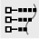 Multi |
多对象批处理 | ExtendMulti、FlowMulti、BooleanUnionMulti |
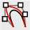 2 |
两个对象之间 | CirclesAlong2Crvs、Copy2Pts、MinMaxDistance2Crvs |
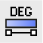 Crv |
曲线 / 曲面 | SymmetricCrv、SymmetricSrf |
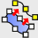 To |
对齐/吸附到某目标 | SetPtToCrv、PolylineToCrv、MoveToZPt |
| By | 以某物为依据 | ArrowsByCrvs、SolidCutByCrv、OrientByFace |
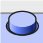 mk |
make,生成某种造型 | mkButtons、mkEngrave、mkGraphics |
| Sel | 选择 | SelRandom、SelSameDots、LookAtSelAll |
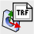 Obj |
对象 | ObjColor2MatColor、TransformObjects |
| Weight | 重量 / 密度 | WeightSolid、WeightDensity |
2.3 交互约定
- 多数命令遵循 Rhino 惯例:先运行命令 → 按提示选取对象 → 在命令行设置选项 → 完成;
- 命令行选项 (
Copy、Flip、nDigits、Type等) 与原生命令的选项风格一致; - 部分命令弹出选项面板/对话框(如
AddCallouts、TransformObjects、AlignPanel); nDigits是全插件通用的 " 小数位数 " 选项,如nDigits = 1表示 0.1 精度、nDigits = 2表示 0.01 精度;- 支持 Undo/Redo(如
AlignPanel明确支持)。
---
第三章 · 命令体系总览矩阵
插件命令按 11 个功能域组织。下表为每个域的完整命令清单与一句话功能 (供速查,详细用法见后续章节):
Point Edit 控制点编辑 (11 条)
| 命令 | 功能 | 页码 (Page) |
|---|---|---|
| ChangeDegreePtCrv | 保持曲线控制点位置不变,改变曲线阶数 | P. 16 |
| ChangeDegreePtSrf | 保持曲面控制点位置不变,改变曲面阶数 | P. 17 |
| ControlPoint2KinkCrv | 把曲线控制点转换为折点 (Kink) | P. 18 |
| 按曲面控制点的一列创建折点并分割曲面 | P. 20 | |
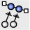 SetPtLinear |
以工作平面为基准,将控制点直线对齐 | P. 21 |
| 将控制点对齐到一条三维直线 | P. 22 | |
| SetPtToCrv | 将控制点对齐到参考曲线上 | P. 25 |
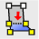 SetPtToFitPlane |
将控制点落到它们的平均拟合平面上 | P. 27 |
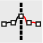 SymmetricCrv |
将曲线控制点对称对齐 | P. 30 |
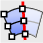 SymmetricSrf |
将曲面控制点对称对齐 | P. 31 |
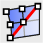 SymmetricDiagonalSrf |
将曲面控制点沿 UV 对角方向对称对齐 | P. 33 |
Curve 曲线 (17 条)
| 命令 | 功能 | 页码 (Page) |
|---|---|---|
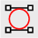 CirclesAlong2Crvs |
沿两条曲线生成相互外切、且与两曲线相切的圆 | P. 34 |
| ExtendMulti | 将多条曲线一次性延伸到边界对象 | P. 35 |
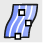 ExtractIsocurvesDivide |
按间距/距离/数量提取曲面等参曲线 | P. 36 |
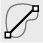 Farthest2PtsInCrv |
找出一条曲线上相距最远的两点并连线 | P. 37 |
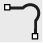 FilletCornerCutting |
以顶点为圆心画圆,对曲线拐角做圆角切割 | P. 38 |
| FitCrvLength | 保持端点不动,把曲线变形到指定长度 | P. 39 |
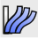 FlowMulti |
对多条目标曲线批量执行 Flow | P. 40 |
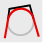 FullRoundCrv |
对三段多段线的两端做全圆角 (Full Round) | P. 42 |
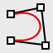 PolylineSplit2Crvs |
在尽量保持多段线形状的前提下转换为曲线 | P. 43 |
| PolylineToCrv | 利用多段线的顶点生成平滑曲线 | P. 45 |
| RevCloudsBySketch | 以手绘方式画云线 (修订符号) | P. 46 |
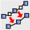 RebuildCrvCountByLength |
按控制点数量或间距长度重建曲线 | P. 47 |
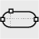 RoundedRectangle |
绘制两端为全圆角 (胶囊形) 的矩形 | P. 49 |
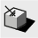 CastVectorShadow |
生成对象在指定方向下的矢量阴影轮廓线 | P. 50 |
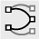 Match2CurveEndsByRotate |
旋转两条曲线使其最近的端点相接 | P. 53 |
| FilletSmooth | 在两曲线间绘制 G2 以上连续的圆角曲线 | P. 54 |
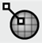 LineNormalToMesh |
沿网格法线方向绘制直线 | P. 54 |
Surface 曲面 (3 条)
| 命令 | 功能 | 页码 (Page) |
|---|---|---|
| SphereDeformable | 生成可编辑控制点的旋转成型球面 | P. 56 |
| UntrimAllP | 对多个对象批量执行 UntrimAll | P. 57 |
| ExtendSrf4Sides | 以曲面边缘为基准向四个方向延伸 | P. 58 |
Solid 实体 (5 条)
| 命令 | 功能 | 页码 (Page) |
|---|---|---|
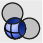 BooleanDifferenceMulti |
逐个执行差集,失败的对象保留不删 | P. 60 |
| BooleanUnionMulti | 逐个执行并集,失败的对象保留不删 | P. 61 |
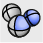 BooleanUnionSubSrfs |
以多重曲面的子曲面为基准执行并集 | P. 62 |
| ExtendExtrusions | 把挤出体延伸到边界对象 | P. 63 |
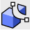 SolidCutByCrv |
用闭合曲线剪切实体 | P. 64 |
Annotation 标注与出图 (12 条)
| 命令 | 功能 | 页码 (Page) |
|---|---|---|
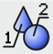 AddCallouts |
为对象生成序号引出标注并可生成明细表 | P. 65 |
| CircleCenterPoints | 输出圆的圆心坐标与半径/直径 | P. 66 |
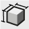 DimBoundingBox |
生成包围盒并标注 X、Y、Z 尺寸 | P. 67 |
| DotZ | 用点标注 (Dot) 显示指定位置的 Z 值 (高度) | P. 68 |
| DotSerial | 生成连续编号的点标注 | P. 69 |
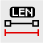 LengthCrvs |
显示所有选中曲线的长度 | P. 70 |
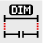 Merge2LinearDimensions |
把两条直线尺寸合并为一条 | P. 71 |
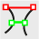 MinMaxDistance2Crvs |
显示两曲线间的最长、最短距离 | P. 72 |
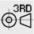 ThirdAngleLayout |
按第三角法布置对象的三视图并标注尺寸 | P. 73 |
| AddLayouts | 按所选图框批量添加布局页面 | P. 74 |
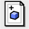 LayoutSameScale |
添加四视图等比例布局 | P. 75 |
| TextSymbols | 把 Unicode 特殊符号复制到剪贴板 | P. 76 |
File 文件管理 (6 条)
| 命令 | 功能 | 页码 (Page) |
|---|---|---|
| ExportEachLayer | 按图层分别导出文件 | P. 77 |
| ImportFilesinFolder | 导入指定文件夹内的全部文件 | P. 78 |
| ExplodeBlockInSameLayer | 炸开块,对象保留在其当前所属图层 | P. 79 |
| MergeLayers | 把多个图层合并为一个 | P. 79 |
| PrintTextContents | 一次性查看 TEXT/DOT/DIM 内容并复制导出 | P. 79 |
| WorksessionMerge | 把工作会话中的多个文件合并为一个文件 | P. 79 |
Transform 变换 (14 条)
| 命令 | 功能 | 页码 (Page) |
|---|---|---|
| AlignPanel | 打开按 XYZ 轴对齐/分布的浮动面板 | P. 80 |
| AlignPanelOff | 关闭对齐面板 | P. -- |
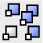 Copy2Pts |
以基准点为参照,把对象批量复制到多个点 | P. 81 |
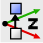 MoveToZLevel |
以 (上/中/下) 基准把对象移动到输入的 Z 高度 | P. 82 |
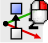 MoveToZPt |
以 (上/中/下) 基准把对象移动到拾取点的高度 | P. -- |
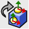 OrientByFace |
把对象从基准曲面对齐移动到目标曲面 | P. 83 |
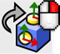 OrientByFlatFaceToXY |
把带平面的构件对齐到 XY 平面 | P. 85 |
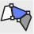 Rotate3DIntersect |
以两条旋转轴的交点为基准做三维旋转 | P. 86 |
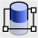 SplitPlanar |
用最多三点的平面切分对象 | P. 87 |
| SubLayersByGroup | 按群组为对象生成子图层 | P. 90 |
| TransformObjects | 高容量网格数据的移动/旋转/镜像/剖切工具 | P. 93 |
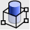 TrimBox |
用一个可实时编辑的盒子裁切显示对象 | P. 94 |
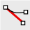 UnrollCrv |
绘制与曲线等长的直线 (曲线展开) | P. 95 |
| Randomize | 对多个对象做随机移动、旋转、缩放与变色 | P. 96 |
Modeling 建模 (19 条)
| 命令 | 功能 | 页码 (Page) |
|---|---|---|
| ArrowsByCrvs | 由曲线生成多种样式的箭头几何体 | P. 101 |
| LawnGrassMesh | 生成渲染用的草坪网格 | P. 104 |
| LookAt | 使插入的 LookAt 块对象朝向相机 | P. 106 |
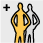 LookAtInsert |
在指定位置插入 LookAt 块对象 | P. -- |
| LookAtLoadDefault | 载入内置的默认 LookAt 块 (人形剪影等) | P. -- |
| LookAtParallel | 使 LookAt 对象无透视地平行朝向相机 | P. -- |
| LookAtProjectZ | 把 LookAt 块对象对齐放置到指定对象表面 | P. -- |
| LookAtSel | 选取与所选 LookAt 对象相同的全部对象 | P. -- |
| LookAtSelAll | 选取全部 LookAt 对象 | P. -- |
| LookAtSelName | 按名称选取 LookAt 对象 | P. -- |
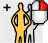 LookAtSetBlock |
把所选对象注册为 LookAt 块 | P. -- |
| mkButtons | 按闭合曲线在曲面上生成按钮造型 | P. 108 |
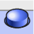 mkButtonsDome |
按闭合曲线在曲面上生成圆顶按钮 | P. -- |
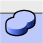 mkEngrave |
把闭合曲线投影到曲面生成阴刻/阳刻凸起 | P. -- |
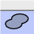 mkGraphics |
把闭合曲线投影并偏移,生成贴附曲面的图形曲面 | P. -- |
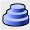 StepExtrude |
按等高曲线生成阶梯状挤出造型 | P. 111 |
| PipeSmooth | 生成直径渐变、截面平滑过渡的管 | P. 114 |
| ExtractJoinedRenderMeshByGroup | 按群组提取并合并渲染网格 | P. 115 |
Display, Settings 显示与设置 (19 条)
| 命令 | 功能 | 页码 (Page) |
|---|---|---|
| SetAbsoluteTolerance | 快速修改绝对公差 | P. 116 |
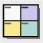 BackGroundColor |
更改视图背景色 | P. 117 |
| BackGroundColorDefault | 恢复默认视图背景色 | P. -- |
| ClippingPlaneNormal | 沿曲面法线方向创建剖切平面 | P. 118 |
| GradientObjectColor | 给对象赋予两色渐变的显示颜色 | P. 119 |
SlideForward / SlideBackward |
按名称顺序正向/反向切换命名视图 | -- |
| SlideCurrent | 恢复到当前命名视图保存的视角 | P. -- |
| ObjColor2MatColor | 按显示颜色创建并赋予材质 | P. 120 |
| ObjColorAsMatColor | 把材质颜色应用为显示颜色 | P. -- |
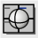 SyncDisplayModes |
把所有视图的显示模式统一为当前视图 | P. 121 |
| LayerOnByObject | 仅保留所选对象所在图层,其余关闭 | P. 122 |
| ExplodedView | 批量移动对象制作爆炸图 | P. 123 |
| SelRandom | 按比例或数量随机选取对象 | P. 124 |
| FullscreenNoTitleMax | 无视图标题的全屏模式 | P. 124 |
| ObjectColor | 更改对象显示颜色 (支持宏调用) | P. 125 |
| ObjectColorFromLayer | 把对象颜色改回图层颜色 | P. -- |
| RandomizeLayersMaterialColor | 随机设置图层材质颜色或改用显示色 | P. 125 |
| SelSameDots | 查找与所选 Dot 内容相同的 Dot | P. 125 |
| SelDotsByContent | 按内容 (精确/包含) 查找 Dot | P. -- |
Analyze 分析 (8 条)
| 命令 | 功能 | 页码 (Page) |
|---|---|---|
| CountObjects | 按名称/图层/材质统计对象数量 | P. 127 |
| DistaceBetween2Faces | 显示两平面间的距离 (原文如此拼写) | P. 129 |
| DistancePt2Objs | 测量基准点到曲面的距离 | P. 130 |
| VolumeOverlapped | 不做布尔并集,近似计算重叠部分体积 | P. 130 |
| WeightSolid | 按材质密度计算实体重量 | P. 131 |
| WeightOverlapped | 不做布尔并集,近似计算多个重叠对象的总重 | P. 132 |
| WeightDensity | 编辑并保存材质密度库 | P. 133 |
| SetDensity | 为对象附加材质/密度信息供明细表使用 | P. 133 |
Help 帮助 (2 条)
| 命令 | 功能 | 页码 (Page) |
|---|---|---|
| byRhinoGadgetHelp | 打开插件帮助页面 | P. 134 |
| byRhinoHome | 打开 byRhino 官网 | P. 134 |
---
第四章 · 控制点编辑
本章命令作用于曲线/曲面的控制点,是曲面造型 (尤其高阶连续性调整) 的核心工具组。除 SetPt* 系列需先打开控制点外,多数命令直接对对象整体操作。
功能:在保持曲线控制点位置不变的前提下,改变曲线的阶数 (Degree)。
步骤:
1. 运行 ChangeDegreePtCrv;
2. 选取目标曲线;
3. 输入要更改的阶数。
选项:
- Midpoint — 在既有控制点之间插入新的控制点。
要点:
- 节点 (Knot) 处的连续性随阶数改变:Degree=2 的曲线在节点处为 G1(相切) 连续,Degree=3 为 G2 连续。可用 CurvatureGraph 检查曲率分布。
- 典型用法:先用低阶 (如 3 阶) 曲线快速拉出形状,再用本命令升到 4、5、6 阶——形状基本不变,但获得更高的连续性。
- 结果是控制点位置相同、节点均匀 (Uniform)的曲线,因此形状会有差异。若想在形状完全不变的前提下升阶,请使用 Rhino 原生 ChangeDegree 命令。
功能:在保持曲面控制点位置不变的前提下,分别改变曲面的 U、V 阶数。
步骤:
1. 运行 ChangeDegreePtSrf;
2. 选取目标曲面;
3. 输入新的 U 阶数;
4. 输入新的 V 阶数。
要点:
- 与曲线版同理:先低阶快速造型,再升高阶获得高连续性;可用 CurvatureGraph、CurvatureAnalysis、Zebra 检查。
- 结果为 Uniform 曲面,形状会变;要形状不变请用原生 ChangeDegree。
功能:把曲线的某个控制点直接转换为折点 (Kink,尖角)。
步骤:
1. 运行 ControlPoint2KinkCrv;
2. 选取目标曲线;
3. 选取要转换为折点的控制点。
要点:
- 想在曲线上做出 " 硬边 " 造型时,无需重新建模,直接把控制点变成 Kink 即可。
- 转换后曲线的阶数随剩余控制点数量而变化。
- 注意:若对象处于多重历史 (History) 链中,转换可能打断历史。例如:曲线经 ExtrudeCrv 生成曲面、又对该曲面做过 FlowAlongSrf——给曲线加 Kink 后 ExtrudeCrv 的结果会变成多重曲面,FlowAlongSrf 将失效。
功能:选取曲面控制点的一列,将其转换为折点。
步骤:
1. 运行 ControlPoint2KinkSrf;
2. 选取目标曲面;
3. 选取要转换的控制点;
4. 在命令行选项中选择 U 或 V 方向后确认。
要点:
- 曲面会沿折点行被分割,子曲面之间产生真实边缘。
- 分割后两块曲面的阶数由各自控制点数决定。
功能:以工作平面 (CPlane) 为基准,把选中的控制点排成直线。
步骤:
1. 打开曲面的控制点 (PointsOn);
2. 运行 SetPtLinear;
3. 选取要对齐的控制点;
4. 输入直线的两个基准点。
要点:
- 与原生 SetPt 不同,本命令可以自定义对齐方向,因此斜线方向的对齐也很容易。
- 控制点在工作平面方向上的高度得以保留 (仅在平面内移动)。
功能:把控制点真正对齐到三维空间中的一条直线上。
步骤:
1. 打开曲面的控制点;
2. 运行 SetPtLinear3D;
3. 选取要对齐的控制点;
4. 输入直线的两个基准点。
要点:
- 适合把特定控制点做 G1(相切) 对齐,或把控制点整理成真正的直线形态 (不受当前工作平面约束)。
功能:把控制点对齐到参考曲线上。
步骤:
1. 打开曲面的控制点;
2. 运行 SetPtToCrv;
3. 选取要对齐的控制点;
4. 选取基准曲线,完成对齐。
要点:
- Planar 选项:不使用时,控制点完全落到三维曲线上;设为 Yes 时,控制点只在当前视图工作平面内移动、保持原有构图平面高度。
- 需要把三维控制点按某一特定视图的形状整理时,使用 Planar 选项。
功能:把所选控制点放置到它们的平均拟合平面上。
步骤:
1. 打开曲面的控制点;
2. 运行 SetPtToFitPlane;
3. 选取想压平的控制点。
要点:
- 适合把曲面局部区域 " 抹平 ",或把旋转成型曲面极点附近的控制点整理到同一平面。
- 若只是想把控制点沿工作平面的某方向排布 (而非压平),请用 SetPtLinear。
功能:把曲线的控制点排成对称。
步骤:
1. 运行 SymmetricCrv;
2. 选取目标曲线;
3. 输入两点确定对称轴;
4. 选择对称方向。
要点:
- 用于 " 对称造型但不想在中轴处断开、要保持一条完整曲线 " 的场景。
- 控制点数为奇数时,中心控制点恰好落在对称轴上。
- 周期 (Periodic) 曲线:请先把接缝 (Seam) 转到中轴附近再执行。
功能:把曲面的控制点排成对称。
步骤:
1. 运行 SymmetricSrf;
2. 选取目标曲面;
3. 输入两点确定对称轴;
4. 选择对称方向。
要点:
- 用于 " 对称造型但不在中轴处分缝、保持单一曲面 " 的场景。
- 奇数控制点时中心控制点落在轴上;周期曲面先把 Seam 转到中轴附近再执行。
功能:把曲面的控制点沿 UV 对角方向排成对称。
步骤:
1. 运行 SymmetricDiagonalSrf;
2. 选取目标曲面;
3. 选择对称基准方向;
4. 沿斜线输入两点确定对齐。
要点:
- 前提:曲面 U、V 方向的控制点数量必须相同。
- 对称方向以 UV 平面的原点为基准设定;若方向不对,先用原生 Dir 命令翻转 U 或 V 方向再执行。
- 封闭曲面 (球) 不适用。
---
第五章 · 曲线工具
功能:沿两条曲线生成一串圆——每个圆与两条曲线相切,且相邻圆彼此相切。
步骤:
1. 运行 CirclesAlong2Crvs;
2. 按顺序选取两条曲线。
要点:
- 两条曲线必须同为开放或同为闭合。
- 从第一条所选曲线的起点开始、沿曲线方向依次生成圆。
- 闭合曲线时,首圆与末圆不会重叠或相交。
功能:把多条曲线一次性延伸到指定的边界对象。
步骤:
1. 运行 ExtendMulti;
2. 设置选项;
3. 选取边界对象 (可多选);
4. 选取要延伸的曲线 (可多选)。
选项:
- Type:
- Line — 生成与原曲线相切的直线延伸段;
- Arc — 生成与原曲线相切的圆弧延伸段;
- Smooth — 生成与原曲线保持曲率连续的平滑延伸段。
要点:
- 曲线、直线不限;边界对象无论曲线、曲面、实体均可。
- 一次命令即可对所有选中曲线执行延伸。
- 只有当边界对象位于曲线的行进方向上时才会延伸。
功能:按间距、距离或数量,从曲面提取等参曲线 (Isocurve)。
步骤:
1. 运行 ExtractIsocurvesDivide;
2. 设置选项;
3. 选取目标曲面。
选项:
- Direction:U(提取 U 方向)/ V / Both(双向);
- Modes:
- Numbers — 按输入数量提取;
- Length — 按长度等分提取;
- LengthRounded — 按长度等分后四舍五入为整数条提取;
- EquilDistance — 按完全等距提取;
- Type:Distance — 设定距离值。
要点:需要按等参线对曲面做对齐、修剪、排布时非常有用。
功能:找出一条曲线上彼此距离最远的两个点,并生成连接两点的曲线。
步骤:
1. 运行 Farthest2PtsInCrv;
2. 选取目标曲线 (可多选)。
要点:需要知道弯曲曲线的精确最大跨度时使用。
功能:以曲线拐角顶点为圆心、按设定半径画圆,再用圆完成拐角切割。
步骤:
1. 运行 FilletCornerCutting;
2. 设定半径;
3. 选取构成拐角的两条曲线 (若已结合/join,则选取角点两侧)。
要点:面向 CNC 加工中的 Fillet 或孔加工需求。
功能:保持曲线两个端点不动,把曲线变形到收敛于指定长度。
步骤:
1. 准备曲线;
2. 运行 FitCrvLength;
3. 输入目标长度值。
要点:
- 典型场景:2D 版型、服装版型等展开图中,精确编辑曲线段的长度。
- 命令行提示 Target curve length (Distance between ends is *) 中的数值是可缩减的最小长度**(即两端点间距);若把目标长度设得更小,曲线会退化为 1 阶 (直线) 曲线。
功能:对多条目标曲线重复执行原生 Flow(沿线流动)。
步骤:
1. 运行 FlowMulti;
2. 选取要做 Flow 的对象;
3. 选取基准曲线;
4. 设置选项;
5. 选取多条目标曲线后应用。
选项:
- Copy — 是否复制 Flow 对象;
- Rigid — 保持 Flow 对象形状;
- Stretch — Flow 对象随曲线变形。
要点:原生 Flow 一次只能选一条目标曲线;需要把同一对象流动到多条曲线上时用本命令。
功能:对具有三个分段 (Segment) 的多段线两端做全圆角 (Full Round,半圆头)。
步骤:
1. 运行 FullRoundCrv;
2. 选取目标曲线。
要点:曲线段、直线段均可,只要总数为三段即可。
功能:把多段线转换为曲线,同时尽量保持原形状。
步骤:
1. 运行 PolylineSplit2Crvs;
2. 选取目标曲线;
3. 设置选项后确认。
选项:
- Main Option:
- Angle Limit — 角度阈值;
- Increment — 增量;
- Delete Input — 删除输入对象;
- Output:
- Interpolate(Degree)— 转为插值曲线并改阶;
- Rebuild(Point counts / Degree)— 按控制点数和阶数重建;
- Refit(Tolerance / Degree)— 按公差和阶数重新拟合。
要点:与原生 Squish 配合使用时,可把展开得到的闭合多段线在形状不变的前提下转为 3 阶曲线。
功能:利用多段线的顶点生成平滑曲线。
步骤:
1. 运行 PolylineToCrv;
2. 选取目标曲线;
3. 输入顶点忽略距离 (Skip vertex distance)。
要点:
- 忽略距离越大,生成曲线的控制点越少、曲线越平滑。
- 文档示例:忽略距离 30 与忽略距离 1000 的对比效果差异明显。
功能:用手绘 (Sketch) 方式圈画区域,自动生成云朵形修订云线 (Revision Cloud)。
步骤:
1. 运行 RevCloudsBySketch;
2. 输入云齿间距;
3. 圈画区域生成曲线 (顺时针与逆时针方向决定云齿朝向)。
选项:
- Main Option:
- Distance — 切分手绘曲线的距离值;
- Angle — 构成云齿的弧线角度;
- Output:
- Closed — Yes 生成闭合曲线 / No 生成开放曲线;
- On Surface — 在曲面上生成;
- On Mesh — 在网格上生成;
- Click To Sketch — 点击式手绘模式。
要点:云线是图纸上标注修改意见的通用符号,本命令让其在 Rhino 中也能随手绘制。
功能:按控制点数量或控制点间距为基准重建曲线。
步骤:
1. 运行 RebuildCrvCountByLength;
2. 选取目标曲线;
3. 设置选项后确认。
选项:
- Point Counts — 按控制点数量重建;
- Length — 按控制点间距长度重建;
- Degree — 曲线阶数;
- Delete Input — 删除原曲线;
- Create new object on current layer — 把结果放到当前图层;
- Preserve end tangent directions — 保持端部切线方向。
要点:
- 逆向工程利器:把投影到网格上的多段线重建为间距均匀、阶数可控的曲线。
- 复杂曲线无需先 Split 再 Rebuild,即可在保形前提下有效精简控制点。
功能:绘制两端为全圆角 (半圆,即 " 跑道形/胶囊形 ") 的矩形曲线。
步骤:
1. 指定第一个基准点;
2. 指定第二个基准点;
3. 指定 (端部) 圆的直径。
要点:本质是两个等径圆及其公切线的组合;生成的曲线可直接喂给 mkButtonsDome 等命令。
功能:生成对象在指定光照方向下的阴影轮廓曲线(矢量阴影)。
步骤:
1. 运行 CastVectorShadow;
2. 选取要投影阴影的对象;
3. 选取承接阴影的对象 (若使用该对象最低点的 XY 平面,直接回车);
4. 用两点指定光线角度;
5. 自动执行 Hatch(填充)。
要点:
- 调整方向线即可控制阴影轮廓的位置。
- 实体对象会自动执行 Hatch 命令生成填充——适合出矢量风格的效果图、轴测图。
功能:旋转两条曲线,使二者相距最近的端点彼此贴合。
步骤:
1. 运行 Match2CurveEndsByRotate;
2. 选取目标曲线。
要点:以最近点为基准移动对齐。
功能:在两条曲线之间绘制具有 G2 以上曲率连续的 " 圆角状 " 曲线。
步骤:
1. 运行 FilletSmooth;
2. 按顺序选取两条曲线。
要点:
- 生成 G2 以上连续连接的圆角曲线——比原生 Fillet(G1) 更顺滑,适合外观面、手板的高光过渡。
- 直线、曲线均可自由组合;两端都是曲线时,结果质量可能不如直线组合。
功能:沿网格 (Mesh) 表面指定点的法线方向,绘制指定长度的直线。
步骤:
1. 运行 LineNormalToMesh;
2. 选取网格;
3. 在网格上指定位置,按设定长度生成直线。
---
第六章 · 曲面工具
功能:生成控制点可编辑的旋转成型 (Revolved) 球面——即 " 可揉捏的球 "。
步骤:
1. 运行 SphereDeformable;
2. 设置 U、V 方向阶数;
3. 指定球心;
4. 输入直径,或用基准点方式创建球。
选项:
- Main Option:Sphere control points count — 设置/重设球的 UV 阶数;
- Output:Center of sphere — 指定球的位置点。
要点:
- 最低阶数为 6。
- 支持原生 Sphere 的定位方式:2Point、3Point、Tangent、AroundCurve、4Point、FitPoints。
- 与 " 先建球再 Rebuild" 相比,其控制点天然对称排布(普通 Rebuild 会产生不对称点),更适合有机曲面造型起点。
功能:对多个对象批量执行原生 UntrimAll(取消全部修剪)。
步骤:
1. 运行 UntrimAllP;
2. 多选目标曲面;
3. 设置是否删除修剪曲线,确认完成。
要点:相当于炸开多重曲面后选择性 Untrim,用于把曲面整体恢复到原始未修剪状态再编辑。
功能:以曲面边缘为基准,向四个方向等长延伸。
步骤:
1. 运行 ExtendSrf4Sides;
2. 选取要延伸的曲面。
选项:
- Smooth:Yes — 保持曲率连续延伸;No — 沿直线方向延伸。
---
第七章 · 实体建模
功能:对多个对象逐个执行差集 (Difference) 运算,运算失败的对象保留不删。
步骤:
1. 运行 BooleanDifferenceMulti;
2. 选取要被差集的对象 (曲面/多重曲面);
3. 多选执行差集的工具对象。
要点:
- 批量中个别对象布尔失败时,会自动跳过失败者完成其余运算。
- 布尔对象数量很多时,是排查失败对象的利器。
功能:对多个对象逐个执行并集 (Union) 运算,失败的对象保留。 步骤:同 7.1,只是运算为并集。
功能:以多重曲面的特定子曲面为基准执行并集,无需先炸开对象。
步骤:
1. 运行 BooleanUnionSubSrfs;
2. 选取要被并集进去的子曲面 (可多选);
3. 选取执行并集的对象 (可多选)。
要点:不炸开多重曲面就能对某几个面做局部并集,省去炸开-重组的往返。
功能:把多个挤出 (Extrusion) 对象延伸到指定的边界对象。
步骤:
1. 运行 ExtendExtrusions;
2. 选取作为边界的对象;
3. 选取要延伸的实体 (可多选)。
要点:
- 边界对象不能是点、曲线、网格,其余类型均可。
功能:用闭合曲线剪切实体。
步骤:
1. 运行 SolidCutByCrv;
2. 选取作为边界的曲线;
3. 选取要剪切的对象。
选项(Direction):
- Difference — 删除曲线内侧的部分;
- Intersection — 删除曲线外侧的部分 (文档原文作 Intersectiom,按 Intersection 理解);
- Split — 按曲线分离对象。
要点:
- 边界曲线可以是闭合曲线;若为开放曲线,其两端点必须横跨被切对象。
- 边界曲线与被切对象均可多选。
---
第八章 · 标注与出图
功能:为对象生成带序号的引出标注 (Callout),并可同时生成明细表 (Table)。
步骤:
1. 运行 AddCallouts;
2. 选取目标对象;
3. 在选项面板中设置后确认。
选项:
- Callout — 圆形/方形样式切换、文字大小;
- Sort — 编号类型、排列 (Plan) 角度;
- Search position — 4/2/1 方向、引线长度;
- Table — 生成含编号、名称、图层、材质、颜色、密度、重量、备注列的表格;
- Edit order — 调整表格列顺序;
- Set base pt — 指定表格放置基准点 (表格左上角);
- Update view — 更新当前视图。
要点:
- 表格的图层名、材质、颜色、密度、重量、备注等列可按需增删。
- 支持在视图窗口与布局 (Layout) 页面中使用;布局模式下先选择 Detail 视图,即可选取其中的模型对象。
- 与 SetDensity、WeightDensity、RandomizeLayersMaterialColor 联动可自动带出材质、密度、重量信息;配合 ExplodedView 可制作爆炸图 + BOM 表达。
功能:输出圆的圆心坐标 (x, y, z) 与半径/直径。
步骤:
1. 运行 CircleCenterPoints;
2. 选取圆 (可多选);
3. 指定显示的小数位数。
选项:
- nDigits — 小数位数 (如 nDigits=1 → 0.1;nDigits=2 → 0.01);
- Output:Diameter(直径)/ Radius(半径);
- AddNumDot — 是否在圆心显示编号点标注;
- Sort — 编号顺序。
要点:
- 命令先给圆随机编号,再逐一输出圆心坐标与半径。
- 输出的数值可直接复制,粘贴到 Excel 会自动按单元格分列。
功能:按对象形状生成包围盒 (Bounding Box),并标注其 X、Y、Z 尺寸。
步骤:
1. 运行 DimBoundingBox;
2. 设置选项;
3. 选取目标对象。
选项:
- Type:
- Dot — 尺寸以点标注显示;
- Dimension — 尺寸以线性标注显示;
- Value — 尺寸在独立窗口中显示 (文本可复制,便于写文档);
- DrawBox:Yes 绘制包围盒 / No 只标注不画盒;
- nDigits — 小数位数;
- Orient:World 以世界坐标为基准 / CPlane 以工作平面为基准。
功能:用点标注 (Dot) 显示任意位置的 Z 值 (高度)。
步骤:
1. 运行 DotZ;
2. 设置小数位数;
3. 拾取要标注高度的点。
选项:nDigits — 小数位数。
要点:低于工作平面原点的高度会带负号显示。
功能:生成按顺序编号的点标注。
步骤:
1. 运行 DotSerial;
2. 输入编号前缀 (可不输);
3. 在需要的位置依次放置 Dot。
要点:
- 有前缀时显示为 " 前缀 + 数字 ",无前缀时只显示数字。
- 编号自动接续文档中已有的编号继续。
功能:一次性显示所有选中曲线的长度。
步骤:
1. 运行 LengthCrvs;
2. 设置选项;
3. 选取曲线。
选项:
- Type:
- Dot — 以点标注显示;
- Text — 以文本显示 (含 Text Height 字高、Font 字体设置);
- AlignedDim — 以对齐尺寸标注显示 (以端点为界);
- Value:Length(曲线长度)/ EndDistance(端点直线距离);
- nDigits — 小数位数。
功能:把两条直线尺寸标注合并为一条。
步骤:
1. 运行 Merge2LinearDimensions;
2. 按顺序选取要合并的尺寸。
要点:
- 两条尺寸即使标注高度不同,只要在同一直线方向上即可合并。
- 两尺寸之间间隔再宽也可执行,结果为以两条尺寸最外端点为界的单一尺寸。
功能:显示两条曲线之间的最长与最短距离。
步骤:
1. 运行 MinMaxDistance2Crvs;
2. 选取两条曲线。
要点:最短距离以绿色曲线标示,最长距离以红色曲线标示,同时给出数值。
功能:以工作平面为基准,把对象按第三角法三视图布置,并生成尺寸标注。
步骤:
1. 运行 ThirdAngleLayout;
2. 设置选项;
3. 选取目标对象。
选项:
- AddDim — 是否标注对象尺寸;
- DistanceBetweenViews — 视图间距;
- AddViewTitle — 是否显示视图标题;
- TitleFont / TitleSize — 标题字体与字号。
要点:尺寸与字体默认值可按用户环境自行调整。
功能:按所选图框一次性添加多个布局页面。
步骤:
1. 运行 AddLayouts;
2. 选取要加入布局的图框 (图面框架);
3. 选择布局尺寸。
选项:A3_landscape(A3 横向)、A3_portrait(A3 纵向)、A4_landscape、A4_portrait。
要点:
- 会在视图底部按所选对象自动生成对应的图层页签。
- 多张图纸一次性输出 PDF 时非常方便。
- 生成后可用原生 Layouts 命令管理这些页面。
- 大幅面图纸或多页打印输出时,可把图纸切分为可打印尺寸 (A4/A3) 并归入各图层。
功能:添加一个四视图 (Top/Perspective 等) 布局,且四个视图比例一致。
步骤:
1. 运行 LayoutSameScale;
2. 设置布局尺寸;
3. 设置详图视图数量 (Initial Detail Count) 后确认。
要点:
- 原生 Layout 生成的四视图各自比例不同,本命令强制四视图等比——适合直接出图。
- 新布局窗口中对象以线框 (曲线) 方式显示。
功能:把 Unicode 特殊符号复制到剪贴板,供文字输入使用。
步骤:
1. 运行 TextSymbols;
2. 点击要用的符号按钮 (复制到剪贴板);
3. 在 Text 等文字命令中 Ctrl+V 粘贴。
要点:
- 点击 Edit symbol file 按钮可用记事本编辑符号表:删除不用的符号、调整常用符号顺序、追加新符号。
- 新符号可参考 https://unicode.org/charts。
---
第九章 · 文件与图层管理
功能:按图层为单位,把对象自动导出为指定格式的文件。
步骤:
1. 运行 ExportEachLayer;
2. 选择导出格式 (扩展名);
3. 选择保存位置;
4. 选择要导出的图层;
5. 输入名称并确认。
要点:把建模数据按零件分别存档交付时非常方便。
功能:把指定文件夹内的所有文件自动导入当前文档。
步骤:
1. 运行 ImportFilesinFolder;
2. 选择要导入的文件夹;
3. 设置选项后确认。
选项:
- Align — 排列导入的文件;
- AddNameDot — 用点标注显示文件名。
要点:Rhino 可导入的所有格式均支持;需要统一查看某工作文件夹内全部文件时很方便。
功能:炸开块实例 (Block Instance) 时,让对象保留在当前所归属的图层,而不是回到块定义时的图层。
步骤:
1. 运行 ExplodeBlockInSameLayer;
2. 选取块对象。
要点:原生 Explode 会把对象还原到块定义时的图层;当块的实例已被整理到别的图层时,用本命令可避免炸开后图层 " 跳回 "。
功能:把多个图层合并为一个图层。
步骤:
1. 运行 MergeLayers;
2. 选取图层后确认;
3. 选择合并目标图层,或创建新图层。
选项:
- NEW — 新建图层 (作为合并目标);
- Set layer Current — 除当前图层外,把其余所选图层全部合并 (当前图层保持);
- Select — 通过选择对象来定位其图层。
要点:可把分散在多个图层的对象一次性归并到同一图层,移动与图层合并同步完成。
功能:一次性查看文档中所有 TEXT、DOT、DIM 的内容,并支持复制与导出。
步骤:
1. 运行 PrintTextContents;
2. 在面板中操作。
选项:
- Copy All — 复制全部文本;
- Save As — 保存为 .txt 文件。
要点:Copy All 的结果可直接粘贴到 Excel、记事本等。
功能:把工作会话 (Worksession) 中挂接的多个工作文件合并为一个文件。
步骤:
1. 在 Worksession 中挂接工作文件;
2. 运行 WorksessionMerge。
---
第十章 · 空间变换
功能:AlignPanel 打开一个浮动面板,按 X/Y/Z 轴对选中对象执行对齐 (Align) 与分布 (Distribute);AlignPanelOff 关闭该面板。
步骤:
1. 运行 AlignPanel;
2. 选取目标对象;
3. 点击面板上的图标执行对应操作。
选项:
- Align To:CPlane(按工作平面/相对坐标)/ World(按世界坐标/绝对坐标);
- Distribute:Center(按中心分布)/ Gap(按间隔分布)。
要点:X、Y、Z 三轴均可对齐;支持 Undo/Redo——相当于把平面设计软件的对齐工具搬到三维空间。
功能:以对象上的基准点为参照,把对象复制到逐个拾取的多个目标点。
步骤:
1. 运行 Copy2Pts;
2. 选取要复制的对象;
3. 在对象上拾取基准点;
4. 依次拾取各复制目标点。
要点:以基准点定位、复制对象数量不限,适合 " 按点位摆零件 " 的批量操作。
功能:以对象的上/中/下三等分基准,把对象移动到指定高度。MoveToZLevel 通过键盘输入 Z 数值;MoveToZPt 通过拾取点确定目标高度。
步骤(MoveToZLevel):
1. 运行 MoveToZLevel;
2. 选取对象;
3. 在命令行选项中选择 Top / Middle / Bottom;
4. 输入 Z 值。
步骤(MoveToZPt):同上,第 4 步改为拾取目标高度参照点。
选项:Align — 对齐基准,即对象三等分后的顶、中、底位置。
要点:以输入数值的方式精确控制 Z 向移动,适合楼层、标高类的摆放。
功能:把对象从基准曲面移动对齐到目标曲面(以两者中心对位)。
步骤:
1. 运行 OrientByFace;
2. 选取要移动的对象;
3. 选取该对象上作为基准的面;
4. 设置选项;
5. 选取目标曲面。
选项:
- Copy — 是否保留原对象;
- Flip — 翻转放置方向 (曲面上方/下方)。
要点:
- 支持挤出体 (Extrusion)、多重曲面、曲面。
- 圆柱与圆按 UV 中心点对位。
功能:把具有平面的构件 (如建筑部件) 对齐到 XY 平面。
步骤:
1. 运行 OrientByFlatFaceToXY;
2. 选取对象;
3. 设置选项。
选项:
- Copy:Yes 保留原对象 / No 删除原对象;
- Space — 构件之间的高度间隔;
- Align:Top / Middle / Bottom — 以构件顶/中/底为对齐基准。
功能:以两条旋转轴的交点为基准,对对象做三维旋转。
步骤:
1. 运行 Rotate3DIntersect;
2. 选取第一个旋转对象;
3. 拾取两点定义旋转轴,再拾取旋转后将要相交的交点;
4. 选取第二个旋转对象;
5. 同样定义轴与交点;
6. 选择以交点 A 或 B 为准完成旋转。
功能:用指定方向的平面切分所选对象。
步骤:
1. 运行 SplitPlanar;
2. 选取要切分的对象;
3. 指定切分平面的起点与终点 (最多可用三点)。
要点:
- 块 (Block) 对象被切分时自动转为多重曲面;
- 被切分的实体仍保持为实体;
- 切分后对象属性 (图层、颜色等) 全部保留。
功能:按群组 (Group) 为单位,把选中对象归入新建的子图层。
步骤:
1. 先以图层划分标准给对象分组;
2. 运行 SubLayersByGroup;
3. 选取要生成图层的对象群组。
要点:
- 子图层创建在当前选中图层之下;
- 嵌套群组以最顶层群组为准,一个群组对应一个子图层。
- 渲染前 " 按材质分组 → 生成子图层 " 是推荐工作流 (见 15.3)。
功能:以面板方式对高容量网格数据 (如扫描点云/大网格) 执行移动、旋转、镜像与剖切查看。
步骤:
1. 运行 TransformObjects;
2. 选取要变换的对象;
3. 在面板中按 Move / Rotate / Mirror / Clipping 操作。
选项:
- Move — 输入 X/Y/Z 移动距离或用上下箭头微调;
- Increment — X/Y/Z 各轴步进单位;
- Form To Pts — 按首末两点对位移动;
- Rotate — 输入 X/Y/Z 旋转角或箭头微调;
- Increment — 步进角度;
- Align 2Pts — 按两条线对位旋转;
- 3Pts — 按三点定向;
- Mirror — 按各轴基准镜像 (勾选方框可预览);
- Color — 镜像参考色 (改色、吸色、复制、粘贴);
- Axis — XY / XZ / YZ 镜像平面;
- Clipping — 剖切视图 (勾选方框预览);
- Plane — XY / XZ / YZ 剖切平面;
- Undo / Redo / Reset — 撤销、重做、复位。
要点:处理大体量扫描数据时,用本命令摆正、镜像、检查比逐个原生命令高效得多。
功能:只显示盒子内部的对象;盒子被移动、编辑时,裁切区域实时更新。
步骤:
1. 运行 TrimBox;
2. 选取目标对象;
3. 指定要裁切显示的盒子区域;
4. 选择保留或删除原对象。
选项:
- Add objects — 保留原对象;
- Remove objects — 删除原对象。
功能:把曲线展开,绘制与其等长的直线。
步骤:
1. 运行 UnrollCrv;
2. 选取目标曲线。
要点:展开直线与原曲线严格等长,作为 Flow 的基准线使用时能得到精确结果 (文档示例:利用 Flow 做文本沿曲线排布)。
功能:对多个对象做随机移动、旋转、缩放,或随机改色。
步骤:
1. 运行 Randomize;
2. 设置选项后确认。
选项:
- Object transform:
- Move — 按设定范围随机移动 X/Y/Z;
- Rotate — 按设定范围随机旋转 X/Y/Z;
- Scale — 按设定范围随机缩放 X/Y/Z;
- Point move — 随机移动点 (控制点/网格顶点);
- Display color — 在设定 RGB 范围内随机改色。
要点:
- 让批量摆放的对象 " 自然不死板 " 地抖动一点,是它的招牌用法。
- 也用于随机扰动曲面/曲线控制点、网格顶点,制造有机噪声。
---
第十一章 · 建模与造型细节
功能:由曲线生成多种样式的箭头几何体。
步骤:
1. 先创建箭头要沿着的曲线;
2. 运行 ArrowsByCrvs 并选取曲线;
3. 选择选项后应用。
选项:
- Type — 箭头头部样式:Arrow、OpenArrow、OpenArrowDot、Dot;
- LineWidth — 箭杆宽;
- HeadWidth — 头部横向宽;
- HeadHeight — 头部纵向高;
- Direction — 头部方向;
- Solid — 有无厚度;
- Thickness — 厚度值。
要点:可多选曲线批量生成;文档展示了建筑分析图 (Diagram) 应用。
功能:生成渲染用的草坪 (草叶) 网格对象。
步骤:
1. 准备:一片曲面 (草要附着的表面)+ 一条定义范围的闭合曲线;
2. 运行 LawnGrassMesh,选取范围曲线;
3. 选取附着曲面;
4. 设置角度、大小等选项后生成。
选项:
- GrassLength — 草叶长度;
- GrassWidth — 草叶宽度;
- AngleMax / AngleMin — 草叶倾倒的最大/最小角度;
- Space — 草叶间距。
要点:
- 输出为单一网格,数据量友好;
- 配合平面贴图 (Planar mapping) 上材质效果好。
核心概念:LookAt 是一类特殊的块 (Block) 对象——无论相机怎么转,它始终朝向相机,像 " 始终面向观众的广告牌 "。典型用途是建筑概念图中的 2D 剖切人形 (Tree/人物剪影),也可注册 3D 对象。
| 命令 | 功能 |
|---|---|
| LookAt | 使所有已插入的 LookAt 块朝向相机 (带透视) |
| LookAtInsert | 在指定位置插入 LookAt 块 |
| LookAtLoadDefault | 载入内置默认 LookAt 块 (Man1~4、Woman1~3 人形) |
| LookAtParallel | 使 LookAt 对象无透视地平行朝向相机 |
| LookAtProjectZ | 把 LookAt 块放置/对齐到指定对象表面 |
| LookAtSel | 选取与所选 LookAt 相同的全部对象 |
| LookAtSelAll | 选取全部 LookAt 对象 |
| LookAtSelName | 按名称选取 LookAt 对象 |
| LookAtSetBlock | 把所选对象注册为 LookAt 块 |
基本流程:
1. LookAtLoadDefault 载入默认人形,或 LookAtSetBlock 注册自定义对象 (选对象 → 拾取中心点 → 命名);
2. LookAtInsert 插入:从列表选名字,或用 Random 随机插入;
3. LookAt(透视朝向) 或 LookAtParallel(平行朝向) 统一对齐;
4. LookAtProjectZ 可把它们贴到指定对象表面。
要点:
- 生成的 LookAt 对象可双击批量编辑;
- 注册自定义块时,建议用带 Alpha 通道的图片 (Picture 导入)——剪影效果最好。
这是一组 "闭合曲线 + 曲面 → 曲面细节造型" 的命令,常与 RoundedRectangle(胶囊形) 配合,做产品曲面上的按钮、刻印、丝印等细节:
| 命令 | 输出 |
|---|---|
| mkButtons | 沿曲线形状贴着曲面凸起的 " 按钮 " |
| mkButtonsDome | 同上,但按钮顶面为圆顶 (Dome) |
| mkEngrave | 把曲线投影到曲面,生成阴刻/阳刻凸起 (刻印、logo) |
| mkGraphics | 把曲线投影并复制偏移,生成与基础曲面隔开一段距离的 " 贴附图形曲面 "(印刷/丝印效果) |
共同步骤:运行命令 → 选取造型用的 (闭合) 曲线 → 选取附着曲面 → 设置选项后应用。
选项对比:
- mkButtons:MoveButton(凸出量)、Offset(按钮间距)、Direction(生成角度)、Flip(翻转方向);
- mkButtonsDome:同上 + Height(圆顶高度);
- mkEngrave:Height(凸出高度)、Direction(角度与方向)、Flip;
- mkGraphics:Height(与基础曲面的间距)、Direction、Flip。
要点:四条命令的输入曲线都必须是闭合曲线。
功能:指定最低点后,以等高线为基准,生成逐级升高的阶梯状挤出造型。
步骤:
1. 运行 StepExtrude;
2. 选取最外侧的边界曲线;
3. 选取等高线曲线 (可多选);
4. 设置选项;
5. 选取作为最底面的曲面 (可多选)。
选项:
- Height — 每级台阶的高度;
- Type:Extrude(生成实体挤出)/ Move(生成曲面向上抬);
- BooleanUnion — 把各级台阶布尔并为一个实体;
- MergeFaces — 把多选的基准曲面合并为一个。
要点:等高线与基准曲面均可多选——地形、层叠体量、地台一步成型。
功能:沿曲线生成直径可变、截面平滑过渡的管。
步骤:
1. 运行 PipeSmooth;
2. 选取目标曲线;
3. 在曲线上 (多点) 设定直径 (可多选点);
4. 选择管端是否保持切线连续。
选项:
- Diameter — 以直径设定管径;
- Circumference — 以周长设定管径;
- Area — 以截面积设定管径;
- Tangent — 管端是否保持切线。
要点:与原生 Pipe 的分段硬接不同,PipeSmooth 的变径处曲率平滑——文档提供了两者的曲率对比;适合有机形态的管路、把手。
功能:按群组提取各对象的渲染网格 (Render Mesh) 并合并,形成渲染友好的网格结构。
步骤:
1. 先按材质把对象分成群组;
2. 运行 ExtractJoinedRenderMeshByGroup;
3. 选取目标对象。
要点:
- 解决 " 对象数量过多拖慢渲染 " 的问题:按组合并后网格数大幅下降。
- 只需做好分组,即可完成渲染前的数据整理。
---
第十二章 · 视口显示与环境设置
功能:快速修改文档的绝对公差 (Absolute Tolerance,即 Rhino Options → Units 中的值)。
步骤:
1. 运行 SetAbsoluteTolerance;
2. 在命令行输入新的公差值。
要点:
- 公差显著影响 FlowAlongSrf 等命令的结果:降低公差执行,速度更快、结果更简洁。
- 在保持 Curvature 以上连续性的前提下,低公差生成的对象仍可 Join;而且要移动的点更少,后续点编辑更轻。
功能:BackGroundColor 修改视图背景颜色;BackGroundColorDefault 恢复默认色。
要点:
- 若显示设置里背景被固定为 " 单色 (Solid Color)" 等模式,命令无法生效——需把背景设为 " 使用应用程序设置 (Use Application Setting)"。
功能:沿所选曲面的法线方向创建剖切平面。
步骤:
1. 运行 ClippingPlaneNormal;
2. 选取目标对象的一个曲面;
3. 在曲面上指定剖切面中心点;
4. 指定第二个参照点 (决定剖切面大小);
5. 点击指定角度。
选项:Copy — 是否复制剖切面。
要点:参照点的间距决定剖切面尺寸;剖切方向沿曲面法线。
功能:给一组对象赋予两种颜色之间的渐变显示色。
步骤:
1. 运行 GradientObjectColor;
2. 选取渐变的两个端点颜色;
3. 框选目标对象。
要点:排好序的对象可直接拖框生成渐变;乱序对象按应用顺序逐个选取。
功能:按命名视图 (Named View) 的名称顺序,正向/反向逐个切换视角;SlideCurrent 在视角被改动后恢复到当前命名视图的存档视角。
步骤:
1. 先在 Named View 面板保存好各视图;
2. 运行 SlideForward(下一张) 或 SlideBackward(上一张);
3. SlideCurrent — 直接恢复当前命名视图。
选项(Named View Animation Settings):
- Animate named view restoration — 恢复视图时是否播放动画;
- Constant time — 等时模式 (帧数↑速度↓);
- Constant speed — 等速模式 (每帧单位距离↑速度↑);
- Delay between frames — 帧间延迟 (毫秒↑速度↓)。
要点:给命令设快捷键,即变身演示放映器——审图、汇报时逐视角讲解;Named View 面板关闭状态也可执行。
- ObjColor2MatColor:按对象显示色创建同色材质并赋予;若显示色来源是图层,则为该图层创建材质。材质类型为 Custom,名称为 RGB 值 (如 000,000,000)。
- ObjColorAsMatColor:反向——把材质颜色应用为显示颜色。
要点:ObjColorAsMatColor 让工作画面即所见渲染色,设计过程中的视觉判断更准确;两者配合 RandomizeLayersMaterialColor 构成渲染配色工作流。
功能:把所有视图的显示模式统一为当前所选视图的模式。
步骤:
1. 先把某个视图调成想要的显示模式并点选该视图;
2. 运行 SyncDisplayModes。
要点:任何显示模式类型均可用。
功能:仅保留所选对象所在图层开启,其余图层全部关闭 (隔离显示)。
步骤:
1. 运行 LayerOnByObject;
2. 选取目标对象。
要点:大量对象纠缠时快速 " 只看我要的 "。
功能:同时移动多个对象,制作分解视图 (爆炸图)。
步骤:
1. 运行 ExplodedView;
2. 选取目标对象;
3. 设置选项后确认。
选项:
- Axis — X / Y / Z,按指定轴移动对象;
- Link — 三轴同时移动;
- Scale — 移动量;
- Save Named Position — 保存移动后的位置 (命名位置)。
要点:大批对象一次性位移,比逐个 Move 高效;常与 AddCallouts 组合出 " 爆炸图 + 序号表 "。
功能:按比例或数量随机选取对象。
步骤:
1. 运行 SelRandom;
2. 选取目标对象;
3. 设置选项后确认。
选项:InputType — Percentage(按百分比)/ Counts(按个数)。
功能:进入全屏,且视图不显示标题文字 (比原生 Fullscreen 更干净)。
要点:建议设为快捷命令或快捷键使用。
- ObjectColor:更改对象显示颜色;
- ObjectColorFromLayer:把对象颜色改回其图层颜色 (右键附加白色/黑色快速选项)。
宏用法(ObjectColor 可写进工具栏按钮):
- 颜色名 (中/英文,含空格需删空格或加引号):
- ObjectColor Pause 빨강 / ObjectColor Pause Red
- ObjectColor Pause "연한 회색" / ObjectColor Pause 연한회색
- RGB 值 (逗号分隔,含空格需引号):
- ObjectColor Pause 255,0,0 / ObjectColor Pause "255, 0, 0"
功能:随机设置各图层的材质颜色,或把图层材质色改为该图层的显示颜色。
步骤:直接运行 RandomizeLayersMaterialColor。
选项:
- Color:Random(随机色材质)/ LayerDisplayColor(用图层显示色做材质色);
- Names:Layer(以图层名命名材质)/ Number(以 Mat-0、Mat-1、Mat-2… 命名)。
要点:免去在渲染器中逐对象调材质的重复劳动,可视化前期准备大幅提速。
- SelSameDots:选取一个 Dot,找出所有内容与其完全相同的 Dot;
- SelDotsByContent:输入文字,查找内容相似或精确匹配的 Dot。
SelDotsByContent 选项:
- Match case — 区分大小写;
- Include — 不区分大小写地匹配 " 包含该文字 " 的 Dot。
要点:两者同时勾选 = 不区分大小写的包含匹配。
---
第十三章 · 物理分析与测算
功能:按对象名称、图层、材质统计数量。
步骤:
1. 运行 CountObjects;
2. 设置选项;
3. 选取目标对象 (选择 DrawTable 或 GridView 输出)。
选项:
- OutputType — 输出类型;
- DrawTable — 在视图中绘制表格:
- Font 字体、FontSize 字号、LineSpace 行距;
- GridView — 以电子表格窗口显示,支持复制、另存、打印。
要点:GridView 内容可复制粘贴到 Excel;按图层名、对象名、材质分组呈现。
功能:显示两个面 (平面) 之间的距离。
步骤:
1. 运行 DistaceBetween2Faces(命令名原文如此拼写);
2. 依次选取两个曲面。
要点:计算的是平面之间的距离;适合测层高、净高等建筑数据。
功能:测量基准点到曲面的距离。
步骤:
1. 运行 DistancePt2Objs;
2. 拾取第一个基准点;
3. 应用选项;
4. 选取要测距的曲面。
选项:
- Type:Dot — 以点标注显示距离;
- DistanceTo:Object(到所选曲面的距离)/ Plane(过基准点的垂面距离);
- nDigits — 小数位数。
功能:不做布尔并集,直接近似计算多个互相重叠对象的总体积——专治 " 布尔算不动 " 的对象。
步骤:
1. 运行 VolumeOverlapped;
2. 选取互相重叠的对象;
3. 设置采样间隔 (확인 간격);
4. 命令行选 Yes 确认。
要点:
- 原理:按对象截面面积积分计算体积;
- 采样间隔越小,近似值越精确 (耗时也越长);
- 支持 Brep、Mesh、SubD 对象。
功能:按所选材质的密度,计算实体对象的重量。
步骤:
1. 运行 WeightSolid;
2. 选取目标对象;
3. 选择密度 (材质) 后确认。
要点:
- 材质来自 WeightDensity 维护的密度库 (默认值 + 自定义);
- 支持 SubD 对象。
功能:不做布尔并集,近似计算多个重叠对象 (按并集口径) 的合计重量。
步骤:
1. 运行 WeightOverlapped;
2. 选取目标对象;
3. 设置密度 (材质);
4. 输入采样间隔;
5. 命令行确认。
要点:需要 " 多个对象加起来的总重 " 时使用;间隔越小越准;支持 SubD。
功能:编辑并保存各材质的密度值 (比重)。
步骤:
1. 运行 WeightDensity;
2. 添加材质并设置其密度值。
要点:
- 建立材质 (密度) 库后,WeightSolid / WeightOverlapped 的密度选择直接从库中读取;
- 支持搜索、整理、批量删除多个密度条目。
功能:为对象附加 " 材质/密度/重量 " 信息,供 AddCallouts 的明细表 (Table) 调用。
步骤:
1. 运行 SetDensity;
2. 从列表选择材质;
3. 选取对象后应用。
---
第十四章 · 官方技术支持与帮助
打开插件帮助页面。同时提供:byRhino 官网、PlusPlastic 博客 (라이노스 블로그)、Rhino 用户社区 (라이노스 카페) 的链接。
打开 byRhino 官网——可进行软件购买、技术支持、培训咨询。 ---
第十五章 · 六大典型高阶工作流
本章把散落在各命令 " 要点 " 中的用法串联成完整的任务流程。
15.1 逆向与曲线重建 (扫描数据 → 干净曲线)
- 摆正数据:
TransformObjects对扫描网格做 Move / Rotate(Align 2Pts、3Pts)/ Mirror 摆正,必要时用 Clipping 检查内部; - 提取截面:在网格上勾画轮廓,用
PolylineToCrv(设 Skip vertex distance) 或PolylineSplit2Crvs转为平滑曲线; - 精简控制点:
RebuildCrvCountByLength按间距均匀重建为 3 阶曲线; - 检查与衔接:
FilletSmooth做 G2+ 圆角;Farthest2PtsInCrv验证最大跨度;SetAbsoluteTolerance临时降公差加速FlowAlongSrf类运算。
15.2 高质量曲面造型 (低阶起步 → 高阶成型)
- 用低阶 (3 阶) 曲线快速勾形——编辑快;
ChangeDegreePtCrv/ChangeDegreePtSrf升到 4~6 阶,控制点原位、连续性提升;- 需要硬边时
ControlPoint2KinkCrv/ControlPoint2KinkSrf打 Kink(注意历史链会断); - 用
SetPtLinear/SetPtLinear3D/SetPtToCrv/SetPtToFitPlane精修控制点; - 对称造型用
SymmetricCrv/SymmetricSrf(保持单一对象、中轴不断开); SphereDeformable起手的有机形体,PipeSmooth做平滑变径管;- 曲率检查:
CurvatureGraph/CurvatureAnalysis/Zebra(原生命令)。
15.3 渲染准备 (分组 → 材质 → 网格)
- 按材质给对象分群组(Group);
SubLayersByGroup一键生成按组划分的子图层;RandomizeLayersMaterialColor为各图层随机配材质色 (或LayerDisplayColor模式直接用显示色);ObjColor2MatColor/ObjColorAsMatColor校准显示色与材质色;ExtractJoinedRenderMeshByGroup按组抽出合并的渲染网格,降低对象数;- 配景:
LawnGrassMesh铺草、LookAt系列插入人形剪影 (LookAtParallel适合平行视图); - 细节:
mkButtons(Dome)做产品按钮、mkEngrave做刻印、mkGraphics做丝印面、CastVectorShadow生成矢量阴影。
15.4 图纸与标注 (建模 → 出图)
- 视图布置:
ThirdAngleLayout生成三视图 (可带尺寸与标题),LayoutSameScale建等比四视图布局,AddLayouts按图框批量加页面 (A3/A4); - 尺寸与数据标注:
DimBoundingBox(包围盒三向尺寸)、DotZ(标高)、LengthCrvs(曲线长)、MinMaxDistance2Crvs(两线极值距离)、CircleCenterPoints(圆心清单→可贴 Excel)、Merge2LinearDimensions(合并尺寸); - 序号与明细:
SetDensity给对象挂材质密度 →AddCallouts生成序号 + 明细表 (含重量列); - 修订与符号:
RevCloudsBySketch圈改、TextSymbols输入特殊符号、ArrowsByCrvs画指示箭头; - 数据核查:
CountObjects统计数量、PrintTextContents导出全部文字。
15.5 批量文件整理 (交付与归档)
- 按图层拆件:
ExportEachLayer; - 整文件夹合并查看:
ImportFilesinFolder(可自动排列 + 文件名 Dot); - 图层归并:
MergeLayers(可新建合并目标层); - 炸块不乱层:
ExplodeBlockInSameLayer; - 多文件协同:
Worksession挂接 →WorksessionMerge合并归档。
15.6 演示与审阅 (汇报放映)
- 把关键视角存为 Named View(按播放顺序命名);
FullscreenNoTitleMax全屏 +BackGroundColor调整背景;- 给
SlideForward/SlideBackward/SlideCurrent设快捷键,放映时逐视角切换 (可开动画过渡); - 需要强调结构时:
ExplodedView爆炸 +ClippingPlaneNormal剖切 +AlignPanel整理版面。
---
附录 A · 核心术语与参数对照表
| 中文 | 英文/原文 (韩文) | 说明 |
|---|---|---|
| 对象 | Object (개체) | Rhino 中的几何/图元 |
| 曲线 / 曲面 | 커브(Curve)/ 서피스(Surface) | |
| 多重曲面 | Polysurface (폴리서피스) | 多个曲面结合而成的复合对象 |
| 实体 | Solid (솔리드) | 封闭体积对象 |
| 控制点 | 제어점(Control Point) | NURBS 的控制顶点 |
| 阶数 | Degree (차수) | NURBS 多项式次数 |
| 折点/尖角 | 꼬임(Kink) | 曲线/面上曲率不连续的硬点 |
| 闭合曲线 | 폐곡선(Closed Curve) | |
| 工作平面 | 구성평면(CPlane) | Construction Plane |
| 包围盒 | BoundingBox (바운딩박스) | |
| 等参曲线 | 아이소커브(Isocurve) | 曲面上 U/V 定值曲线 |
| 图层 | 레이어(Layer) | |
| 布局 | 레이아웃(Layout) | 图纸页面/出图空间 |
| 详图视图 | Detail View (디테일 뷰) | 布局中的模型视图窗口 |
| 尺寸标注 | 치수(Dimension) | |
| 点标注 | 도트(Dot) | 可缩放的文字点 |
| 云线 | 리비전(Revision Cloud) | 修订标记符号 |
| 材质 | 재질(Material) | |
| 密度/比重 | 밀도/비중(Density) | |
| 命名视图 | 명명된 뷰(Named View) | |
| 显示模式 | 디스플레이모드(Display Mode) | |
| 剖切平面 | Clipping Plane (클리핑 평면) | |
| 块 | Block (블록) | 块定义与实例 |
| 群组 | Group (그룹) | |
| 网格 | Mesh (메시) | |
| 渲染网格 | Render Mesh (렌더메시) | 显示/渲染用的细分网格 |
| 工作会话 | Worksession (워크세션) | 多文件引用协作机制 |
| 公差 | Tolerance (공차) | 绝对公差 Absolute Tolerance |
| 阴刻/阳刻 | Engrave / Emboss (음각/양각) | engrave(凹)/emboss(凸) |
| 爆炸图/分解视图 | Exploded View (분해뷰) | |
| 三视图 (第三角法) | Third Angle (3면도) | |
| 接缝 | Seam (씸) | 封闭 NURBS 的闭合缝 |
| 挤出体 | Extrusion (돌출) | 曲线拉伸成的轻量实体 |
| 光标牌 | LookAt (카메라 추적) | 始终朝向相机的块 |
附录 B · 官方技术资源与生态
| 资源 | 地址 |
|---|---|
| 插件帮助文档 (本书原始资料) | https://www.byrhino3d.com/byRhinoGadget/help/index.html |
| byRhino 官网 (购买/技术支持/培训) | https://www.byrhino3d.com/ |
| PlusPlastic 博客 (라이노스 블로그) | https://blog.naver.com/plusplastic |
| Rhino 用户社区 (라이노스 카페) | https://cafe.naver.com/rhinoscafe |
| Unicode 符号表 (TextSymbols 扩充用) | https://unicode.org/charts |
---
版权说明:本书为 byRhino Gadget 官方帮助文档 (© 2023 PlusPlastic. All rights reserved.) 的中文编译参考。原始版权归原作者所有;命令名、选项名以插件实际版本为准。